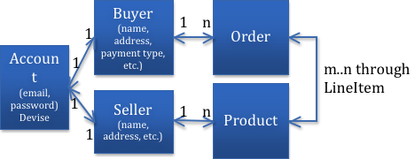

In this project, we are going to add two very important features to the Depot application -- User Authentication and Authorization. Additionally, as seen in most web applications, we are also going to add admin's dashboards.
Task J in the Rails book covers User Authentication (signing up, logging in, logging out) and Authorization (Limiting access), however at low level and with very limited capabilities and flexibilities. Therefore, instead, we are going to use a number of well-tested and popularly-used gems – in particular, Devise for user authentication, Pundit for user authorization, and Administrate for admin's dashboards. Inevitably, we will customize these gems to fit our project’s specific requirements.
By no means though, these gems are the only ones out there for us to use, you are highly encouraged to explore others.
In addition, in Appendix A, you will find my personal opinionated take on these gems. So I strongly suggest you to stop here, read Appendix A, come back, and continue.
Here is how we envision user authentication and authorization in the Depot project.
There are three types of users/accounts in Depot: admin, seller, and buyer. Anyone can sign up either as a seller or as a buyer. However, for security reasons, the admin account should only be pre-created.
Anyone (with or without an account) can see the catalog page (either regular or SPA).
When logging in either as a seller or as a buyer, a user can update his/her profile that includes name, address, payment type (for buyers only), etc.
Of course, he/she can also opt to cancel his/her account.
Neither a seller nor a buyer is allowed to see other seller’s or buyer's profile. Only admin is (see the last item below).
When logging in as a seller, a user can add, edit, and delete products (i.e. books).
When navigating to the “products” page, the seller only sees those products that he/she owns.
When navigating to the “orders” page, only those orders containing products that are owned by him/her are listed.
A seller user should not be allowed place orders.
When placing orders, for a buyer who is currently logged in, information such as name, email, address, and payment type in his/her profile will be automatically used to fill up the ordering form.
Such orders will then be linked to his/her account. When navigating to the “orders” page, a buyer shall only see his/her order listed.
A buyer user should not be allowed to see the “products” page.
When placing orders without logging in as a buyer, the order placer has to fill up the ordering form with information such as name, email, address, and payment type when placing that order.
Such orders will not be linked to any account. Only admin and sellers who own the products contained in these orders can see them listed on the “orders” page.
When logging in as the admin (who does not necessarily have a profile though), all site-wise administrative functions are available. Such functions include adding, editing, and deleting products, orders, and users/accounts (i.e. buyers and sellers) as well as shopping carts, line items, etc.
In this part, we are going to work on user authentication with Devise. For more information about Devise, go to https://github.com/plataformatec/devise.
First of all, we are going to create a Bootstrap Navigation Bar on the top of all Depot pages where top-level links are displayed. These links include "Sign Up", "Sign In", "Sign Out", "Catalog", "Catalog(SPA)", "Orders", "Products", etc. Also, the side column on the "Catalog" page shall be removed since all the links are now displayed in the Bootstrap Nav. Bar.
Modify app/views/layouts/application.html.erb:
...
<body>
<header class="main">
<%= render 'layouts/navigation' %>
</header>
<section class="content">
<% if @spa.nil? %>
<nav class="side_nav">
<div id="cart">
<%= render_if @cart && @cart.line_items.any?, @cart %>
</div>
</nav>
<% end %>
<main class='<%= controller.controller_name %>'>
<%= yield %>
</main>
</section>
</body>
...In the app/views/layouts/ folder, create two partials
_navigation.html.erb:
<nav class="navbar navbar-expand-lg navbar-dark">
<%= image_tag 'logo.svg', alt: 'The Pragmatic Bookshelf' %>
<button class="navbar-toggler" type="button" data-toggle="collapse" data-target="#navbarNavDropdown" aria-controls="navbarNavDropdown" aria-expanded="false" aria-label="Toggle navigation">
<span class="navbar-toggler-icon"></span>
</button>
<div class="collapse navbar-collapse" id="navbarNavDropdown">
<ul class="navbar-nav">
<%= render 'layouts/navigation_links' %>
</ul>
</div>
</nav>_navigation_links.html.erb:
<li class="nav-item dropdown">
<a class="nav-link dropdown-toggle" href="#" id="navbarDropdownMenuLink" role="button" data-toggle="dropdown" aria-haspopup="true" aria-expanded="false">
Catalog Links
</a>
<div class="dropdown-menu" aria-labelledby="navbarDropdownMenuLink">
<%= link_to 'Catalog', store_index_path(spa: false), class: "dropdown-item" %>
<%= link_to "Catlog(SPA)", store_index_path(spa: true), class: "dropdown-item" %>
</div>
</li>In app/view/carts/_cart.html.erb, enclose the current contents entirely within a div of css class carts:
<div class="carts">
<article>
...
</article>
</div>Then, fix some style sheets in the app/assets/stylesheets/ folder. See details in Appendix B.
Reload your browser and check out the changes.
Git alert
Add gem 'devise' into Gemfile and bundle install it.
Then run
rails generate devise:installNow, let's create a model account which is going to be used by devise for authentication purposes:
rails g devise account
rails db:migrateAn alternative and popular name for this model could be
user. Be careful with such a name you shall choose in your group project because it will have direct impact in almost all user authentication steps below.
Devise provides two very handy built-in functions account_signed_in telling you if there is an actively signed-in account and current_account telling you who. You can also access the session for this account through account_session. Let's take advantage of account_signed_in to customize the links available on the Nav. Bar.
Change app/views/layouts/_navigation_links.html.erb:
...
...
<% if account_signed_in? %>
<li class="nav-item">
<%= link_to 'Edit account', edit_account_registration_path, class:"nav-link" %>
</li>
<li class="nav-item">
<%= link_to 'Sign out', destroy_account_session_path, :method=>'delete', class:"nav-link" %>
</li>
<% else %>
<li class="nav-item">
<%= link_to 'Sign in', new_account_session_path, class:"nav-link" %>
</li>
<li class="nav-item">
<%= link_to 'Sign up', new_account_registration_path, class:"nav-link" %>
</li>
<% end %>Restart the server and check out the changes. You should now be able to sign up accounts on Depot as well as sign in and sign out.
Don't sign up though since the automatically created account model is still subject to customization. Let's move on.
Git alert
The account model that we created above is a generic model used by Devise to perform basic user authentication. They don't have any linkage to the rest of the Depot application.
Now, we need to create two models buyer and seller that represent profiles of such two types of accounts respectively and link them to account through a pair of foreign keys/references in account as shown on the left hand side of the figure below, i.e. a one-to-one relationship between Account and Buyer and between Account and seller.
Later on, we will bind
BuyerwithOrderandSellerwithProductas shown on the right hand side of the figure below.

Well, wait a minute, what if we had some other types of accounts? (As a matter of fact, in Depot, we will only have one more account type -- admin, but generally speaking, we could have more.) Do we need to have one foreign key for each of such type? That does not sound efficient, does it? Here is where polymorphic association comes into play. Through polymorphic association, we could associate the account model with multiple other models such as buyer and seller through only one reference accountable_id (well, technically two references because Rails needs another attribute accountable_type to indicate the type of the reference) instead of multiple references.
For example, for 10 types of account types, without polymorphic association, we need 10 foreign keys in
accountto refer to them; with polymorphic association, (regardless of the number of account types,) we need only two --accountable_idandaccountable_type.
So first, let's work on the models.
Run the following commands:
rails g model buyer name:string address:string pay_type
rails g model seller name:string address:string
rails g migration add_accountable_to_account accountable:references{polymorphic}
rails db:migrateNext, modify the three model files affected in the previous step:
app/models/account.rb:
...
belongs_to :accountable, polymorphic: true
...app/models/buyer.rb:
...
has_one :account, as: :accountable
...app/models/seller.rb:
...
has_one :account, as: :accountable
... Now run
rails routes | grep account. As you can see, by default,Deviseprovides three kinds of basic user authentication features as listed below:
- sign in/sign out - xxx_account_session(_path)
- update password - xxx_account_password(_path)
- sign up/cancel - xxx_account_registration(_path)
In the
Depotapplication, to accommodate the account's "type" attribute (i.e. buyer or seller) when signing up an account, we only need to customize the third one (registration). Should you need to customize any other feature(s), you need to make changes to the pertaining controller(s), view(s), and route(s) like what we will do below.
Next, let's work on the views.
In order to allow a new user to select the type of account (i.e. either buyer or seller) when he/she signs up his/her account on Depot, we need to customize the devise view file that renders a form for the new user to fill up with a handy gem simple_form and to customize the devise controller that handles the request for signing up an account.
Different from the order form where we use the basic HTML
formelement, here for user authenticatioin, we take advantage of a more versatile and powerful gemsimple_form- "Rails forms made easy". You are highly recommended to consider using it in your group project whereever a form is needed.
Add gem 'simple_form' into Gemfile and bundle install it.
Then run
rails generate simple_form:install --bootstrapUpdate config/locals/simple_form.en.yml so as to get rid of the "*" marks on all the required fields. (They are just annoying.)
...
required:
text: 'required'
mark: ''
...Add a new scss in the app/assets/stylesheets folder:
accounts.scss:
@import "bootstrap";
.registrations,
.sessions,
.passwords,
.buyers,
.sellers {
width: 80%;
margin: 0 auto;
.form-actions {
.btn {
@extend .btn-primary
}
}
}Run the following command to generate a bunch of view files for devise, one of which (new.html.erb) will have to be customized:
rails generate devise:viewsIn app/views/devise/registrations/new.html.erb, add one more input field for the type attribute:
...
<div class="form-inputs">
...
<%= f.input :type, required: true, as: :radio_buttons, label: "Type of Account", collection: Account::ACCOUNT_TYPES, checked: 'Buyer'%>
</div>
...Apparently, the f.input field above assumes that there is an attribute type and an array ACCOUNT_TYPES in the Account model. So let's go ahead to add such two items to the Account model:
class Account < ApplicationRecord
...
ACCOUNT_TYPES=["Buyer", "Seller"]
attr_accessor :type
endNotice that the
typeattribute above was only added to theAccountmodel. We didn't create a migration to add it as a new column to theaccountsdatabase table though. Well we didn't need to because once the server receives the sign up request that carries suchtypevalue, it is going to translate it into the creation of either a "Buyer" or a "Seller". Thereafter, thistypeattribute is no longer needed thereafter.
Don't forget to modify the ApplicationController such that the new attribute type becomes one of the permitted parameters:
class ApplicationController < ActionController::Base
protect_from_forgery with: :exception
before_action :configure_permitted_parameters, if: :devise_controller?
protected
def configure_permitted_parameters
devise_parameter_sanitizer.permit(:sign_up, keys: [:type])
end
endFinally, the controller's turn.
Modify config/routes.rb by replacing the line devise_for :accounts with
devise_for :accounts, :controllers => { :registrations => 'registrations' }Then add a new controller registrations_controller.rb to the folder app/controllers/ (see below). In particular, pay attention to the create method, which is just a copy of the create method in the parent class Devise::RegistrationsController except now, depending on the type of the account that the user selected, not only a new account object itself but also a buyer (or seller) object are created. Thanks to the Rails convention, the resource.save statement automatically persists both of these objects in the database.
class RegistrationsController < Devise::RegistrationsController
def new
super
end
def create
build_resource(sign_up_params)
if (resource.type=="Buyer")
resource.accountable = Buyer.new
resource.accountable.pay_type = 0 # default pay_type is Check
else
resource.accountable = Seller.new
end
resource.save
yield resource if block_given?
if resource.persisted?
if resource.active_for_authentication?
set_flash_message! :notice, :signed_up
sign_up(resource_name, resource)
respond_with resource, location: after_sign_up_path_for(resource)
else
set_flash_message! :notice, :"signed_up_but_#{resource.inactive_message}"
expire_data_after_sign_in!
respond_with resource, location: after_inactive_sign_up_path_for(resource)
end
else
clean_up_passwords resource
set_minimum_password_length
respond_with resource
end
end
def destroy
@account.accountable.destroy!
super
end
end
Supposedly, the
createmethod above should have looked much simpler because all it has to do is just to override thecreatemethod it inherits from the parent via thesuperstatement and then add the highlightedif...else...endstatement. However, for some reason, I was not able to modify the code such that it works that way. I ran out of time and had to move on with the sub-optimal version as shown above. Sad -:(
Restart the servers and check out the changes. You should now be able to sign up accounts of two different types -- buyer or seller. Here, when testing your program, I highly recommend you to use the DB Browser for SQLite tool to investigate how the database tables are updated.
Git alert
As you saw in step 2.2 above, Devise has built-in support for the update of certain attributes such as email and password listed in the model of account because account was created through the command rails g devise account in the first place.
However, remember at the beginning of step 2.3 above, when we created the buyer and seller models, we also specified a number of attributes like name, address, etc. Devise is not aware of any of such attributes, which are going to be referred to as User Profiles below, so it is our responsibility to add some code to the project so users can update them.
Now, let's do it.
It turns out that all steps below are routine, mechanical, and unsurprising Rails operations.
First, add the following two routes to config/routes.rb.
resources :buyers, only: [:edit, :update]
resources :sellers, only: [:edit, :update]Notice that since the buyer/seller model is created (or destroyed) when the account model is created (or destroyed) automatically thanks to what we did in step 2.3 above, the only two routes that we are going to add here are for edit and update actions.
Second, add items to the navigation bar so users can update their profiles. However, our nav. bar becomes too crowded as we keep adding new items to it. So we need to group some items up there.
app/views/layouts/_navigation_links.html.erb:
...
...
<% if account_signed_in? %>
<li class="nav-item dropdown">
<a class="nav-link dropdown-toggle" href="#" id="editAccountDropdownMenuLink" role="button" data-toggle="dropdown" aria-haspopup="true" aria-expanded="false">
Edit Settings (<%= (current_account.accountable.name.nil? or current_account.accountable.name == "") ? "No Name" : current_account.accountable.name %>)
</a>
<div class="dropdown-menu" aria-labelledby="editAccountDropdownMenuLink">
<% if current_account.accountable_type == "Seller" %>
<%= link_to 'Seller Profile', edit_seller_path(current_account.accountable_id), class: "dropdown-item" %><% else %>
<%= link_to 'Buyer Profile', edit_buyer_path(current_account.accountable_id), class: "dropdown-item" %>
<% end %>
<%= link_to 'Account Settings', edit_account_registration_path, class: "dropdown-item" %>
</div>
</li>
<li class="nav-item">
<%= link_to 'Sign out', destroy_account_session_path, :method=>'delete', class:"nav-link" %>
</li>
<% else %>
<li class="nav-item">
<%= link_to 'Sign in', new_account_session_path, class:"nav-link" %>
</li>
<li class="nav-item">
<%= link_to 'Sign up', new_account_registration_path, class:"nav-link" %>
</li>
<% end %>Also, since we have more and more nav items on our nav bar, let's shift them all the way to the right.
app/views/layouts/_navigation.html.erb:
...
<ul class="navbar-nav ml-auto">
<%= render 'layouts/navigation_links' %>
</ul>
...Third, add two controllers, one for the buyers and the other for the sellers.
app/controllers/buyers_controller.rb:
class BuyersController < ApplicationController
before_action :set_buyer, only: [:edit, :update]
# GET /buyers/1/edit
def edit
end
# PATCH/PUT /buyers/1
# PATCH/PUT /buyers/1.json
def update
respond_to do |format|
if @buyer.update(buyer_params)
format.html { redirect_to store_index_url, notice: "The profile of the buyer #{@buyer.name} was successfully updated." }
format.json { head :no_content }
else
format.html { render action: 'edit' }
format.json { render json: @buyer.errors, status: :unprocessable_entity }
end
end
end
private
# Use callbacks to share common setup or constraints between actions.
def set_buyer
@buyer = Buyer.find(params[:id])
end
# Never trust parameters from the scary internet, only allow the white list through.
def buyer_params
params.require(:buyer).permit(:name, :address, :pay_type)
end
endapp/controllers/sellers_controller.rb:
class SellersController < ApplicationController
before_action :set_seller, only: [:edit, :update]
# GET /sellers/1/edit
def edit
end
# PATCH/PUT /sellers/1
# PATCH/PUT /sellers/1.json
def update
respond_to do |format|
if @seller.update(seller_params)
format.html { redirect_to store_index_url, notice: "The profile of the seller #{@seller.name} was successfully updated." }
format.json { head :no_content }
else
format.html { render action: 'edit' }
format.json { render json: @seller.errors, status: :unprocessable_entity }
end
end
end
private
# Use callbacks to share common setup or constraints between actions.
def set_seller
@seller = Seller.find(params[:id])
end
# Never trust parameters from the scary internet, only allow the white list through.
def seller_params
params.require(:seller).permit(:name, :address)
end
endFourth, add the views files for the buyers.
app/views/buyers/edit.html.erb:
<%= render 'form' %>app/views/buyers/_form.html.erb:
<% if @buyer.name.nil? or @buyer.name == "" %>
<h2>Edit Buyer's Profile</h2>
<% else %>
<h2>Edit <%= @buyer.name %>'s Profile</h2>
<% end %>
<%= simple_form_for(@buyer, as: @buyer, url: buyer_path(@buyer), html: { method: :patch }) do |f| %>
<%= f.error_notification %>
<div class="form-inputs">
<%= f.input :name, required: true, autofocus: true %>
<%= f.input :address, required: true %>
<%= f.input :pay_type, collection: Order::pay_types, as: :radio_buttons %>
</div>
<div class="form-actions">
<%= f.button :submit, "Update" %>
</div>
<% end %>Fifth, add the view files for the sellerss similar to the two files added for buyers above.
Note: Seller does not have the pay_type attribute though.
Finally, you might want to comment out the code in StoreController that you added in one of the previous projects to remind users to place some books in his/her cart after certain number of visits to the store page. That way, the notifications for confirming user sign up/log in/log out/profile update/... can be displayed.
Now, restart the servers and your user authentication features should be working fine. Yeah!
There are far more that Devise can do for you. What makes it even better is that all of them are customizable and bootstrap-decoratable. Go to https://github.com/plataformatec/devise for details.
Git alert
Now that we have user authentication in place, at any time, we know what "type" of user is visiting our web site, be it a logged-in seller, a logged-in buyer, or someone without an account with us at all who is simply browsing the catalog page. Base on that information, we can customize the links on the nav. bar. E.g. buyers should not see the “Products” link because it is only available for the sellers. On the "Products" page, a seller should only see a list of his/her own books. Review Part I above for more details.
In order to do all these, there are two associations that we have to build -- a one-to-many relationship from Seller to Product and a one-to-many relationship from Buyer to Order. Please refresh your mind with the figure in section 2.3.
Again, good news is that except for the "nested routes" added to
config/routes.rbbelow to facilitate so-called "scope-based" handling of products belonging to a specific seller or orders placed by a specific buyer, it turns out that all steps below are routine, mechanical, and unsurprising Rails operations.
First, create a migration to add a new column seller_id in the products table.
rails g migration add_seller_to_product seller:references
rails db:migrateSecond, modify the two model files affected in the previous step:
app/models/product.rb:
...
belongs_to :seller
...app/models/seller.rb:
...
has_many :products
...Third, add the following two nested routes to config/routes.rb:
...
resources :sellers do
resources :products # a nested route: seller_products_path
member do
get 'orders', to: 'line_items#show_orders_for_seller' # a nested route: orders_seller_path
end
end
...Notice that a bi-product of binding products to sellers is that we could also restrict what orders to show for a certain seller -- basically, only those orders that contain products belonging to this perticular seller. This is what the second nested route "orders_seller_path" above is for.
Fourth, add a new group of links to the navigation bar so that a seller can check his/her products and orders; a buyer can check his/her orders -- to be implemented later.
app/views/layouts/_navigation_links.html.erb:
...
<% if account_signed_in? %>
<li role="presentation" class="dropdown">
<a class="dropdown-toggle" data-toggle="dropdown" href="#" role="button" aria-haspopup="true" aria-expanded="false">
Resources <span class="caret"></span>
</a>
<ul class="dropdown-menu">
<% if current_account.accountable_type == "Seller" %>
<li><%= link_to 'My Products', seller_products_path(current_account.accountable_id) %></li>
<li><%= link_to 'My Orders', orders_seller_path(current_account.accountable_id) %></li>
<% else %>
<li><%= link_to 'My Orders', "#" %></li>
<% end %>
</ul>
</li>
...
...
<% else %>
...
<% end %>Fifth, update two controllers, one for binding products with the currently logged-in seller when such products are created and listed and the other for listing those orders containing products owned by the currently logged-in seller.
app/controllers/products_controller.rb:
class ProductsController < ApplicationController
before_action :set_product, only: [:show, :edit, :update, :destroy]
# GET /products
# GET /products.json
def index
if (params[:seller_id])
@seller = Seller.find(params[:seller_id])
@products = @seller.products
else
@products = Product.all
end
end
...
...
# POST /products
# POST /products.json
def create
@product = Product.new(product_params)
if current_account && current_account.accountable_type == "Seller"
@product.seller = current_account.accountable
end
...
end
...
...
endapp/controllers/line_items_controller.rb:
...
def show_orders_for_seller
seller = Seller.find(params[:id])
products = seller.products
@line_items = LineItem.where(product_id: products)
products.each do |product|
logger.info(product)
end
end
...Sixth, add the following view file.
app/views/line_items/show_orders_for_seller.html.erb:
<div class="container">
<h3>Orders Containing My Books:</h3>
<table class="table table-striped table-bordered">
<tr>
<th colspan="2" align="center">Book Info</th>
<th colspan="3" align="center">Order Info</th>
</tr>
<tr>
<th>Book Title</th>
<th>Nr. Copies</th>
<th>Name</th>
<th>Address</th>
<th>Pay Type</th>
</tr>
<% @line_items.each do |line_item| %>
<tr>
<td><%= line_item.product.title %></td>
<td><%= line_item.quantity %></td>
<td><%= line_item.order.name %></td>
<td><%= line_item.order.address %></td>
<td><%= line_item.order.pay_type %></td>
</tr>
<% end %>
</table>
</div>Seventh, hide the "Add to Cart" buttons from the Catalog pages for a currently logged-in seller because your don't want sellers to become buyers.
It is pretty simple to hide the "Add to Cart" buttons from the non-SPA Catalog page:
app/views/store/index.html.erb:
...
<% if current_account.nil? or current_account.accountable_type == "Buyer"%>
<%= button_to 'Add to Cart', line_items_path(product_id: product), remote: true %>
<% end %>
...However, to hide the "Add to Cart" buttons from the SPA Catalog page, you have to modify multiple files. The idea is very straight-forward though: pass a boolean props "seller" to the Catalog component which forwards it to BookList and Book. Then depending on the value of that props, we either hide or display the "Add to Cart" buttons.
app/views/store/index_spa.html.erb:
...
...
<% if account_signed_in? and current_account.accountable_type == "Seller" %>
<%= content_tag :div,
id: "catalog",
seller: true,
cart_id: @cart.id do %>
<%= javascript_pack_tag 'catalog' %>
<% end %>
<%else %>
<%= content_tag :div,
id: "catalog",
seller: false,
cart_id: @cart.id do %>
<%= javascript_pack_tag 'catalog' %>
<% end %>
<% end %>app/javascript/catalog/index.js:
...
...
const seller = JSON.parse(catalog.getAttribute("seller"));
ReactDOM.render(<Catalog cart_id={cart_id} seller={seller} />, catalog);
...app/javascript/catalog/components/Catalog.jsx:
...
<BookList books={this.state.books}
sort ={this.state.sort}
order={this.state.order}
seller={this.props.seller}
handleSortColumn={this.handleSortColumn}
handleAddToCart={this.handleAddToCart} />
...app/javascript/catalog/components/BookList.jsx:
...
books.push(<Book
book={book}
key={'book' + book.id}
seller={self.props.seller}
handleAddToCart={self.handleAddToCart} />);
...
...
...
{ this.props.seller ? <th /> : <th scope="col">Actions</th> }
...client/app/bundles/Catalog/components/Book.jsx:
...
{ this.props.seller ? <td /> :
<td>
<a className="btn btn-success"
onClick={this.handleAddToCart} >
Add to Cart
</a>
</td>
}
...Eighth, to facilitate you to test this project more efficiently, in the create method of the OrderController, comment out the line that sends out email.
...
# OrderNotifierMailer.received(@order).deliver
...Finally, restart the server and test your program
If everything works, give yourself a big hug!
Git alert
As you can imagine, the process for binding orders to buyers is very similar to what we did in step 3.1 above.
First, create a migration to add a new column buyer_id in the orders table.
rails g migration add_buyer_to_order buyer:references
rails db:migrateSecond, modify the two model files affected in the previous step:
app/models/order.rb:
...
belongs_to :buyer, optional: true
...app/models/buyer.rb:
...
has_many :orders
...Third, add the following nested route to config/routes.rb:
...
resources :buyers do
resources :orders # a nested route: buyer_orders_path
end
...Fourth, replace the dumb link <li><%= link_to 'My Orders', "#" %></li> that we added to the navigation bar in app/views/layouts/_navigation_links.html.erb with the following so that buyers can check the orders they've placed so far.
<%= link_to 'My Orders', buyer_orders_path(current_account.accountable_id), class: "dropdown-item" %>Fifth, update the following controller for binding orders with the currently logged-in buyer when such orders are placed and listed.
Notice that, when placing a new order, information in the profile of the currently logged-in buyer are automatically used to fill up the form (see the new method below).
app/controllers/orders_controller.rb:
...
def index
if (params[:buyer_id])
@buyer = Buyer.find(params[:buyer_id])
@orders = @buyer.orders.order('created_at desc').page params[:page]
else
@orders = Order.all
@orders = @orders.order('created_at desc').page params[:page]
end
end
...
def new
@order = Order.new
if current_account && current_account.accountable_type == "Buyer"
@order.name = current_account.accountable.name
@order.address = current_account.accountable.address
@order.email = current_account.email
@order.pay_type = current_account.accountable.pay_type.to_i
end
respond_to do |format|
format.html
format.json { render json: {"redirect":true,"redirect_url": new_order_path }}
end
end
...
def create
@order = Order.new(order_params)
@order.add_line_items_from_cart(@cart)
if current_account && current_account.accountable_type == "Buyer"
@order.buyer = current_account.accountable
end
...
end
...Sixth, in the form for creating a new order, since the Pay Type selector now is implemented using ReactJS (See Project 6, Part II), in order to import the buyer's preferred payment type from his/her profile, a number of files need to be updated:
In app/view/orders/_form.html.erb, replace the content_tag line with the following:
<%= content_tag :div,
id: "order_pay_type",
pay_type: order.pay_type do %>Update app/javascript/order_form/pay_type_selector.js:
...
...
const pay_type = order_pay_type.getAttribute("pay_type");
ReactDOM.render(<PayTypeSelector pay_type={pay_type}/>, order_pay_type);
...Then in the PayTypeSelector React component, add a new function:
componentDidMount = () => {
this.setState({ selectedPayType: this.props.pay_type ? this.props.pay_type : "" });
};Still in the PayTypeSelector React component, in the return function, add the following new property to the <select ...> tag such that PayTypeSelector becomes a "controlled" component:
<select ......, value={this.state.selectedPayType}>Finally, restart the server and test your program.
Make sure you use Bootstrap to prettify the orders page.
Note though, if you don't log in first as a buyer, you still can place orders. But those orders won't be bound to any buyer. Only system admin can see them - to be implemented later.
If everything works, give yourself a bigger hug!
... or one last thing😉, add the following line
...
before_action :authenticate_account!
...at the beginning the these controllers:
ProductsController BuyersController SellersController such that you must login first before being allowed to see any of related pages. If you want, you can do the same thing in CartsController and LineItemsController. I will be just focusing on the three kinds of pages listed above.
Notice that OrdersController is not on the list above though because we allow people to add books to their shopping carts and place orders, not necessarily with an account at Depot first.
In order to facilitate you (and me) to test your Depot project, I created a script as seen in Appendix C. It populates the database with four sellers and eleven products. Each seller owns two to three books.
Copy the script create_sellers_and_products.rb from Appendix C to the lib/ folder of your project.
From now on, this script replaces db/seeds.eb whenever the db tables are to be populated
Note: This script assumes that you have successfully implemented the "image upload" feature of Project 2. You have to fix your issues if there is still any.
Copy all eleven images at https://1drv.ms/f/s!AuP02Ye51S7vgeMsH5F_a5qdF31MGw to the app/assets/images/ folder of your project.
Delete the folder product/ in public/uploads/ all together.
Run the following commands to re-rake all the migrations and populate the database tables with four book sellers Dave, Bob, Mary, and John and their books:
rails db:drop
rails db:migrate
rails runner lib/create_sellers_and_products.rb => From now on, this command replaces "rails db:seed" to populate the tablesNow, restart the servers.
Test your project -- create some buyer accounts from the Web browser, place some orders, and see if everything works.
Git alert
In this part, we are going to work on user authorization with Pundit. For more information about Pundit, go to https://github.com/elabs/pundit.
Add gem 'pundit' into Gemfile and bundle install it.
Include Pundit in your ApplicationController:
class ApplicationController < ActionController::Base
include Pundit
...
...
endCreate a new files to change the behavior of a "not authorized" error produced by Pundit -- instead, an "Access denied" flash notice will be displayed.
config/initializers/pundit.rb:
module PunditHelper
extend ActiveSupport::Concern
included do
include Pundit
rescue_from Pundit::NotAuthorizedError, with: :account_not_authorized
end
private
def account_not_authorized
respond_to do |format|
format.html {
redirect_to request.referrer || store_index_url, notice: "Access denied."
}
format.json {render json: {"redirect":true, "redirect_url": store_index_url}}
end
end
end
ApplicationController.send :include, PunditHelperThen create a folder app/policies/. All pundit policy files that we are going to create later will be placed in this folder.
Restart your servers.
As of now, a seller's profile (i.e. name and address) can be modified by anybody who has logged in.
Login as Bob the seller (whose id is 3) and type
http://localhost:3000/sellers/1/editin the address bar, you can modify Dave's profile.NO GOOD!
To fix the issue,
In the app/policies folder, create a new Pundit policy file for the sellers:
app/policies/seller_policy.rb:
class SellerPolicy
attr_reader :current_account, :model
def initialize(current_account, model)
@current_account = current_account
@seller = model
end
def edit?
@current_account == @seller.account
end
def update?
@current_account == @seller.account
end
endThen modify SellersController
class SellersController < ApplicationController
...
def pundit_user
current_account
end
def edit
authorize @seller
end
def update
authorize @seller
...
end
...
...
end
Now, restart the servers and test your app again. Bob is not allowed to change Dave's profile anymore.
Go ahead to take care the use authorizations for the buyers in the same way above.
Everytime there is a change to the
app/policiesfolder, servers have to be restarted.
In the app/policies folder, create a new Pundit policy file for the products:
app/policies/product_policy.rb:
class ProductPolicy
attr_reader :current_account, :model
def initialize(current_account, model)
@current_account = current_account
@product = model
end
def index?
current_account.accountable_type == "Seller"
end
def show?
@current_account == @product.seller.account
end
def new?
current_account.accountable_type == "Seller"
end
def create?
current_account.accountable_type == "Seller"
end
def edit?
@current_account == @product.seller.account
end
def update?
@current_account == @product.seller.account
end
def destroy?
@current_account == @product.seller.account
end
class Scope < Struct.new(:current_account, :model)
def resolve
model.where(seller: current_account.accountable)
end
end
endThe sub-class Scope above is the Pundit's way of restricting certain scope of objects that are allowed to be exposed to a specific account. In our case, a seller is only allowed to see his/her own books.
Then modify ProductsController
class ProductsController < ApplicationController
...
def pundit_user
current_account
end
...
def index
# if (params[:seller_id])
# @seller = Seller.find(params[:seller_id])
# @products = @seller.products
# else
# @products = Product.all
# end
# The following is much neater than above, isn't it?
authorize Product
@products = policy_scope(Product)
end
...
def show
authorize @product
@orders = @product.orders
end
...
def new
@product = Product.new
authorize @product
end
...
def edit
authorize @product
end
...
def create
@product = Product.new(product_params)
authorize @product
...
end
...
def update
authorize @product
...
end
...
def destroy
authorize @product
@product.destroy
...
end
...
...
end
Also, update ProductsController as what you did in CartsController to handle invalid products.
Now, restart the servers and test your app again.
According Part I at the beginning of this document, if a seller wants to see the orders, he/she should only be allowed to see those orders that contain his/her books. (Also, according the figure in step 2.3, there is no direct relationship between Seller and Order models.) We already implemented that feature in step 3.1 above through a special method show_orders_for_seller in LineItemsController.
Now in order to prevent a seller's orders from being viewed by any other arbitrary sellers (or by someone who's even not currently logged in), we need to make changes to the following files:
app/policies/seller_policy.rb:
class SellerPolicy
...
# add this new method
def show_orders_for_seller?
@current_account == @seller.account
end
endapp/controllers/line_items_controller.rb:
class LineItemsController < ApplicationController
...
def pundit_user
current_account
end
...
...
def show_orders_for_seller
seller = Seller.find(params[:id])
authorize seller, :show_orders_for_seller?
...
end
...
...
end
Next, we need to worry about buyers, who are supposed to be restricted to see only those orders he/she has placed.
In the app/policies folder, create a new Pundit policy file for the orders:
app/policies/order_policy.rb:
class OrderPolicy
attr_reader :current_account, :model
def initialize(current_account, model)
@current_account = current_account
@order = model
end
def index?
if (@current_account)
current_account.accountable_type == "Buyer"
else
false
end
end
def show?
@order.buyer && @current_account == @order.buyer.account
end
def new?
if (@current_account)
@current_account.accountable_type == "Buyer"
else
true
end
end
def create?
if (@current_account)
@current_account.accountable_type == "Buyer"
else
true
end
end
def edit?
@current_account == @order.buyer.account
end
def update?
@current_account == @order.buyer.account
end
def destroy?
@current_account == @order.buyer.account
end
class Scope < Struct.new(:current_account, :model)
def resolve
model.where(buyer: current_account.accountable)
end
end
endThen modify OrdersController
class OrdersController < ApplicationController
...
def pundit_user
current_account
end
...
...
def index
# if (params[:buyer_id])
# @buyer = Buyer.find(params[:buyer_id])
# @orders = @buyer.orders.order('created_at desc').page params[:page]
# else
# @orders = Order.all
# @orders = @orders.order('created_at desc').page params[:page]
# end
authorize Order
@orders = policy_scope(Order)
@orders = @orders.order('created_at desc').page params[:page]
end
...
def show
authorize @order
@products = @order.products
end
...
def new
@order = Order.new
authorize @order
...
end
...
def edit
authorize @order
end
...
def create
@order = Order.new(order_params)
authorize @order
...
end
...
def update
authorize @order
...
end
...
def destroy
authorize @order
@order.destroy
...
end
...
...
end
Also, update OrdersController as what you did in CartsController to handle invalid orders.
Now, restart the servers and test your app thoroughly.
Git alert
In this part, we are going to work on admin dashboards with Administrate. For more information about Administrate, go to https://github.com/thoughtbot/administrate.
Modify the Gemfile and run bundle install --without production
...
gem 'administrate'
...Run rails generate administrate:install
Restart the servers and check out the admin dashboard page at localhost:5000/admin.
One last thing though. As of now, the admin's dashboards are accessible by everyone, which is not good. So the following steps is to make sure only an "admin" can see the admin's pages.
First, add the following line to the authenticate_admin method in app/controllers/admin/application_controller.rb:
redirect_to store_index_url, notice: 'Admin\'s Privilege Is Needed' unless current_account && current_account.accountable_type == 'SuperAccount'Second, update app/models/account.rb:
...
ACCOUNT_TYPES=["SuperAccount", "Buyer", "Seller"]
...However, you don't want an arbitrary user to sign up as a "SuperAccount", so update app/views/devise/registrations/new.html.erb:
...
<%= f.input :type, required: true, as: :radio_buttons, label: "Type of Account", collection: Account::ACCOUNT_TYPES.drop(1), checked: 'Buyer' %>
...Third, run the following commands to create a new model SuperAccount which has just one attribute name:
rails g model super_account name:string
rails db:migrateThen modify app/models/super_account.rb:
...
has_one :account, as: :accountable
...Fourth, create a script lib/create_super_account.rb:
SuperAccount.transaction do
SuperAccount.delete_all
SuperAccount.create( :name => 'super' )
end
Account.transaction do
Account.create( :email => 'super@depot.com', :password => 'changeme', :password_confirmation => 'changeme',
:accountable => SuperAccount.first())
endRun the following command to pre-create a super account:
rails runner lib/create_super_account.rbFifth, we need to make Administrate be aware of this newly created model.
config/routes.rb, add resources :super_accounts to the admin namespaceIn the app/controllers/admin/ folder, create super_accounts_controller.rb:
module Admin
class SuperAccountsController < Admin::ApplicationController
end
endIn the app/dashboards/ folder, create super_account_dashboard.rb:
require "administrate/base_dashboard"
class SuperAccountDashboard < Administrate::BaseDashboard
# ATTRIBUTE_TYPES
# a hash that describes the type of each of the model's fields.
#
# Each different type represents an Administrate::Field object,
# which determines how the attribute is displayed
# on pages throughout the dashboard.
ATTRIBUTE_TYPES = {
account: Field::HasOne,
id: Field::Number,
name: Field::String,
created_at: Field::DateTime,
updated_at: Field::DateTime,
}.freeze
# COLLECTION_ATTRIBUTES
# an array of attributes that will be displayed on the model's index page.
#
# By default, it's limited to four items to reduce clutter on index pages.
# Feel free to add, remove, or rearrange items.
COLLECTION_ATTRIBUTES = [
:account,
:id,
:name,
].freeze
# SHOW_PAGE_ATTRIBUTES
# an array of attributes that will be displayed on the model's show page.
SHOW_PAGE_ATTRIBUTES = [
:account,
:id,
:name,
:created_at,
:updated_at,
].freeze
# FORM_ATTRIBUTES
# an array of attributes that will be displayed
# on the model's form (`new` and `edit`) pages.
FORM_ATTRIBUTES = [
:account,
:name,
].freeze
# Overwrite this method to customize how sellers are displayed
# across all pages of the admin dashboard.
#
# def display_resource(seller)
# "Seller ##{seller.id}"
# end
endSixth, modify app/views/layouts/_navigation_links.html.erb such that when a super user logs in, the only items shown on the nav. bar are Catalog Links, Admin Dashboard, and Logout.
Seventh, typically you don't want the super user to place orders, do you? The "Add to Cart" buttons are already removed from the regular catalog page when a super user logs in, however, they are still showing on the SPA catalog page. So we need to remove them too.
app/views/store/index_spa.html.erb:
<p id="notice"><%= notice %></p>
<% if account_signed_in? and ( current_account.accountable_type == "Seller" or current_account.accountable_type == "SuperAccount")%>
<%= content_tag :div,
id: "catalog",
seller: true,
cart_id: @cart.id do %>
<%= javascript_pack_tag 'catalog' %>
<% end %>
<%else %>
<%= content_tag :div,
id: "catalog",
seller: false,
cart_id: @cart.id do %>
<%= javascript_pack_tag 'catalog' %>
<% end %>
<% end %>Finally, restart the server and test your Depot app one last time.
We started the development of Depot since Project 2. Now it is time to call it and move on. It has been a long journey!
First, remove the alias heroku that you made in project 6.
git remote rm herokuThen login to Heroku and create a project.
heroku login
heroku create project7-yourfirstname-yourlastnameUpdate the two "action_cable" lines in config/environments/production.rb to accommodate project6.
Re-create config/application.yml for sending email through SendGrid (project 6):
SENDGRID_USERNAME: <your_sendgrid_username>
SENDGRID_PASSWORD: <your_sendgrid_username>Git stage and commit the codebase.
Then do the configurations and deployment as summarize below. In particular, in order to populate the database tables, instead of using the seed file as what we did in the previous projects, run the two scripts in the lib/ folder that we created in Part VI and Part IV above respectively.
heroku config:set S3_ACCESS_KEY=<access key>. => These four are for storing images on AWS S3 (project 2)
heroku config:set S3_SECRET_KEY=<secret key>
heroku config:set AWS_REGION =<aws region>
heroku config:set S3_BUCKET=<bucket name>
figaro heroku:set -e production => This is for sending emails via SendGrid (project 6)
git push heroku master:master => Heroku deployment (project 6)
heroku addons:add redistogo => Redis (project 5)
heroku pg:reset DATABASE => These two are for the database (projects 2~6)
heroku run rails db:migrate
heroku run rails runner lib/create_sellers_and_products.rb => project 7
heroku run rails runner lib/create_super_account.rb => project 7
heroku run rails runner lib/load_orders.rb => This is for testing pagination (project 6)Final version of the project source code pushed onto Github,
Alert: Don't push your P8 to the master branch onto your Github repository until I explicitly tell you so on BlazeVIEW. I need to pull your Project 7 down for grading purposes first before you overwrite it with the code for this Project 8.
Final version of the project deployed on Heroku. You must name your application on Heroku:
http://project8-yourfirstname-yourlastname.herokuapp.comThe Git log file reflecting the full history of your project submitted on BlazeVIEW
Devise is almost the de-facto default for Rails user authentication. Just use it. Period.
Almost every web application needs an authorization system, if there are parts of the web site that are restricted to some users. Most web sites set access restrictions based on roles; that is, users are grouped by privilege. The web application checks the user’s role to determine if access is allowed. We call this role-based authorization.
What is worth of mentioning here is Security is Not Obscurity. For example, in a simple application, you might wonder if we really need to block a user from viewing another person’s profile. After all, a user has to be an administrator to see a list of users, so there is no way for an ordinary user to click a link to another user’s profile. However, a clever user can examine the URL when viewing their own profile: http://localhost:3000/users/2. It is not difficult to guess that another profile is available at http://localhost:3000/users/1. Even though there is no link on a web page to the other user’s profile, we need to protect profiles from users who simply manipulate the URL. We should not rely on “security through obscurity” to protect the user profiles.
Role-based authorization can be implemented with simple conditional if statements in Rails controllers or views. In the simplest implementation, we check if a user has a specific role (such as administrator) and either allow access or redirect with an “Access Denied” message. As a framework, Rails allows you to add as much complexity to a controller as you wish. However, the Rails community has come to a consensus that complexity in controllers is a not a best practice; you’ll often hear the advice, “Keep your controllers skinny.” Given that advice, some developers attempt to implement access rules as methods in a model. But access rules don’t belong in a model either, given that a model is best used for retrieving and manipulating data, and not for logic that controls program flow through the application. Rather than build “fat models” with complex access rules for program flow, developers look for ways to keep both models and controllers free from authorization code.
Two approaches stand out. The gem CanCan and its successor CanCanCan; and a newer gem, Pundit. Both are amazingly good.
CanCan provides a DSL (domain-specific language) that isolates all authorization logic in a single Ability class. As an application grows in complexity, the CanCan Ability class can grow unwieldy. Also, every authorization request requires evaluation of the full CanCan Ability class, adding performance overhead. Pundit is an authorization system that uses simple Ruby objects for access rules instead of a centralized Ability class. Pundit provides two helper methods and a set of conventions instead of a DSL. Overall, Pundit is simpler than CanCan but also offers the advantage of segregating access rules into a central location. With Pundit the central location is not a single Ability file. Instead, it is a folder named app/policies/ containing plain Ruby objects that implement access rules. Adding authorization to a controller action requires one line of code that calls a helper method. Pundit uses meta-programming magic to instantiate a policy object that matches an access rule to the controller action. Pundit policy objects are lightweight, adding authorization logic without as much overhead as CanCan.
Pundit is well-suited to the service-oriented architecture that is popular for large Rails applications, emphasizing object-oriented design with discrete Ruby objects providing specialized services. If you wish, you can create a single Pundit policy object for use with all your controllers. More often, developers create a policy object that corresponds with a specific model (for example, a StudentPolicy class to match a Student model) and will use the policy object to control access for actions in a specific controller (for example, a Students controller).
Pundit policy objects are often described as POROs, or “plain old Ruby objects”. PORO simply means that a Pundit policy object doesn’t inherit from other classes or include code mixed in from elsewhere. In contrast, a Rails model that inherits from Active Record is not a PORO; the model inherits behavior that is defined in a parent class. Because Pundit policy objects are POROs, the code is simple and easy to understand.
So, personally, I am sold on Pundit.
ActiveAdmin and RailsAdmin are the two gems that I've primarily used for the Admin interfaces in the past. Although they both worked fine, they became more and more complicated to the extend that I started searching around for alternatives and thus I came across Administrate.
Administrate is simple and straightforward. All rails generate administrate:install does is it
config/routes.eb so existing routes are not affected;app/controllers/admin folder that contains all the controllers for the admin;app/dashboards folder that includes regular ruby files specifying the contents and layouts of all the dashboard pages. No views files are needed.Of course, all above are highly customizable.
In the folder app/assets/stylesheets:
In application.scss:
find and remove the line
...
padding: 1em; // and needs more padding
...find the main tag at the end of the .content class and add one more property max-width in it:
.content {
...
...
...
main {
padding: 0.5em;
max-width: 98%;
}
} In store.scss, stretch the div to take 100% of the width
.store {
width: 100%;
...
}In carts.scss, add back the padding line that you removed from application.css above
.carts {
padding: 1em; // and needs more padding
...
}Create navbar.scss so that the new Bootstrap Navigation Bar at the top of the web page looks right.
@import "bootstrap";
.navbar {
position: relative;
min-height: 40px;
border-bottom: 2px solid;
font: small-caps 25px/25px "Arial", serif;
color: #282;
text-align: center;
.navbar-nav {
font-size: inherit;
}
}lib/create_sellers_and_products.rb
Seller.transaction do
Seller.delete_all
Seller.create( :name => 'Dave', :address => "Dallas, TX")
Seller.create( :name => 'Mary', :address => "San Jose, CA")
Seller.create( :name => 'Bob', :address => "Seattle, WA")
Seller.create( :name => 'John', :address => "Boston, MA")
end
Account.transaction do
Account.delete_all
Account.create( :email => 'dave@depot.com', :password => 'changeme', :password_confirmation => 'changeme',
:accountable => Seller.find_by_name("Dave"))
Account.create( :email => 'mary@depot.com', :password => 'changeme', :password_confirmation => 'changeme',
:accountable => Seller.find_by_name("Mary"))
Account.create( :email => 'bob@depot.com', :password => 'changeme', :password_confirmation => 'changeme',
:accountable => Seller.find_by_name("Bob"))
Account.create( :email => 'john@depot.com', :password => 'changeme', :password_confirmation => 'changeme',
:accountable => Seller.find_by_name("John"))
end
Product.transaction do
Product.delete_all
# Products owned by Dave
Product.create!(title: 'Agile Web Development with Rails 4',
description:
%{<p>
Rails just keeps on changing. Both Rails 3 and 4, as well as Ruby 1.9 and 2.0,
bring hundreds of improvements, including new APIs and substantial performance
enhancements. The fourth edition of this award-winning classic has been reorganized
and refocused so it's more useful than ever before for developers new to Ruby and Rails.
</p>},
image_url: open('app/assets/images/agile.jpg'),
seller_id: Seller.find_by_name("Dave").id,
price: 26.46)
Product.create!(title: 'jQuery Mobile, Up and Running',
description:
%{<p>
By the time you finish this book, you'll know how to create responsive,
Ajax-based interfaces that work on a variety of smartphones and tablets,
using jQuery Mobile and semantic HTML5 code.
</p>},
image_url: open('app/assets/images/jQuery-Mobile.jpg'),
seller_id: Seller.find_by_name("Dave").id,
price: 19.21)
# Products owned by Mary
Product.create!(title: 'Pragmatic Version Control Using Git',
description:
%{<p>
There's a change in the air. High-profile projects such as the Linux Kernel,
Mozilla, Gnome, and Ruby on Rails are now using Distributed Version Control Systems (DVCS)
instead of the old stand-bys of CVS or Subversion.
</p>},
image_url: open('app/assets/images/git.jpg'),
seller_id: Seller.find_by_name("Mary").id,
price: 18.03)
Product.create!(title: 'CoffeeScript Programming with jQuery, Rails, and Node.js',
description:
%{<p>
Learn CoffeeScript programming with the three most popular web technologies around.
</p>},
image_url: open('app/assets/images/coffeescript.jpg'),
seller_id: Seller.find_by_name("Mary").id,
price: 26.99)
Product.create!(title: 'CoffeeScript: Accelerated JavaScript Development',
description:
%{<p>
For 15 years, dynamic web content has been written in a single language:
JavaScript. Now, for the first time, programmers have an alternative that doesn't
add an extra layer of abstraction or require plugins. CoffeeScript provides all
of JavaScript's functionality wrapped in a cleaner, more succinct syntax that
encourages use of "the good parts" of the language.
</p>},
image_url: open('app/assets/images/coffee-ajd.jpg'),
seller_id: Seller.find_by_name("Mary").id,
price: 26.10)
# Products owned by Bob
Product.create!(title: 'CoffeeScript',
description:
%{<p>
CoffeeScript is JavaScript done right. It provides all of JavaScript's
functionality wrapped in a cleaner, more succinct syntax. In the first
book on this exciting new language, CoffeeScript guru Trevor Burnham
shows you how to hold onto all the power and flexibility of JavaScript
while writing clearer, cleaner, and safer code.
</p>},
image_url: open('app/assets/images/cs.jpg'),
seller_id: Seller.find_by_name("Bob").id,
price: 36.00)
Product.create!(title: 'Programming Ruby 1.9 & 2.0',
description:
%{<p>
Ruby is the fastest growing and most exciting dynamic language
out there. If you need to get working programs delivered fast,
you should add Ruby to your toolbox.
</p>},
image_url: open('app/assets/images/ruby.jpg'),
seller_id: Seller.find_by_name("Bob").id,
price: 49.95)
Product.create!(title: 'Rails Test Prescriptions',
description:
%{<p>
<em>Rails Test Prescriptions</em> is a comprehensive guide to testing
Rails applications, covering Test-Driven Development from both a
theoretical perspective (why to test) and from a practical perspective
(how to test effectively). It covers the core Rails testing tools and
procedures for Rails 2 and Rails 3, and introduces popular add-ons,
including Cucumber, Shoulda, Machinist, Mocha, and Rcov.
</p>},
image_url: open('app/assets/images/rtp.jpg'),
seller_id: Seller.find_by_name("Bob").id,
price: 34.95)
# Products owned by John
Product.create(title: 'Rails, Angular, Postgres, and Bootstrap',
description:
%{<p>
<em>Powerful, Effective, and Efficient Full-Stack Web Development</em>
As a Rails developer, you care about user experience and performance,
but you also want simple and maintainable code. Achieve all that by
embracing the full stack of web development, from styling with
Bootstrap, building an interactive user interface with AngularJS, to
storing data quickly and reliably in PostgreSQL. Take a holistic view of
full-stack development to create usable, high-performing applications,
and learn to use these technologies effectively in a Ruby on Rails
environment.
</p>},
image_url: open('app/assets/images/dcbang.jpg'),
seller_id: Seller.find_by_name("John").id,
price: 45.00)
Product.create(title: 'Seven Mobile Apps in Seven Weeks',
description:
%{<p>
<em>Native Apps, Multiple Platforms</em>
Answer the question “Can we build this for ALL the devices?” with a
resounding YES. This book will help you get there with a real-world
introduction to seven platforms, whether you’re new to mobile or an
experienced developer needing to expand your options. Plus, you’ll find
out which cross-platform solution makes the most sense for your needs.
</p>},
image_url: open('app/assets/images/7apps.jpg'),
seller_id: Seller.find_by_name("John").id,
price: 26.00)
Product.create(title: 'Ruby Performance Optimization',
description:
%{<p>
<em>Why Ruby Is Slow, and How to Fix It</em>
You don’t have to accept slow Ruby or Rails performance. In this
comprehensive guide to Ruby optimization, you’ll learn how to write
faster Ruby code—but that’s just the beginning. See exactly what makes
Ruby and Rails code slow, and how to fix it. Alex Dymo will guide you
through perils of memory and CPU optimization, profiling, measuring,
performance testing, garbage collection, and tuning. You’ll find that
all those “hard” things aren’t so difficult after all, and your code
will run orders of magnitude faster.
</p>},
image_url: open('app/assets/images/adrpo.jpg'),
seller_id: Seller.find_by_name("John").id,
price: 46.00)
end